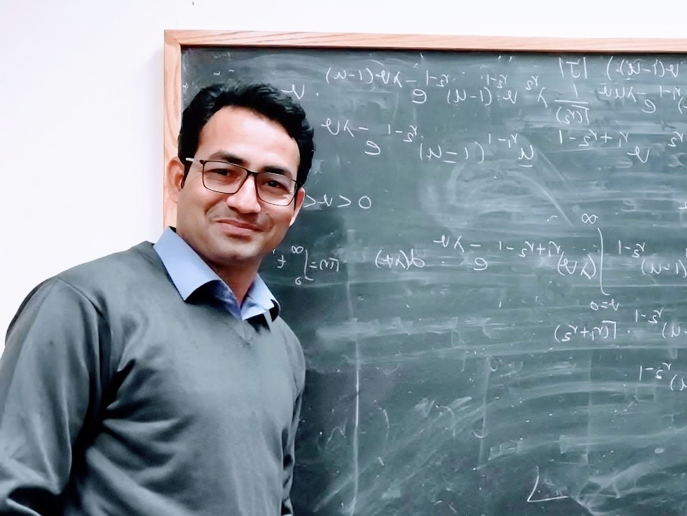

About Me
I am an Assistant Professor of Mathematics at Augusta University. I earned my Ph.D. in Mathematics from the University of North Texas in 2026 in probability and stochastic processes.
My research asks how past events influence the occurrence of future events. I study Hawkes processes, a class of models for events that can trigger further activity, with a particular interest in oscillatory patterns. My work connects mathematical foundations, statistical inference, and computational methods.
I study the stability and long-term behavior of these models, develop moment formulas and estimation methods, and implement simulation and inference tools in R. I am interested in making these methods useful for understanding event data across different fields.
Teaching is central to my work. My experience spans undergraduate and graduate mathematics in Nepal and undergraduate instruction in the United States. Before joining Augusta, I taught at the University of North Texas and Far Western University. My background includes foundational mathematics, calculus, statistics, linear algebra, differential equations, and proof-based courses.
I aim to help students become confident, independent mathematical thinkers through clear explanations, meaningful practice, collaborative projects, and individual support.
Teaching and Research
Research Focus
- Hawkes processes and other self-exciting point processes.
- Oscillatory excitation kernels and event clustering.
- Stability, ergodicity, and statistical inference.
- Moment formulas, maximum likelihood estimation, and Fisher information.
- Simulation, model diagnostics, and reproducible computation in R.
Current Teaching
Fall 2026
- MATH 1111: College Algebra.
- MATH 1113: Precalculus.
Spring 2027 (scheduled)
- MATH 1401: Elementary Statistics.
- MATH 1113: Precalculus.
Both courses include comprehensive group projects designed to deepen understanding and encourage collaboration. I offer individual meetings and maintain an open-door approach to help students address difficulties and make steady progress.
I use D2L Brightspace, Pearson MyLab Math, and short classroom assessments to support practice, provide feedback, and identify areas that need further attention.
Learn more about my teaching →Experience and Tools
- Instructor of record for Precalculus and Business Calculus at the University of North Texas.
- Undergraduate and graduate mathematics teaching at Far Western University.
- Guidance of course projects that reinforce mathematical understanding.
- R, R Markdown, Mathematica, and LaTeX.
- D2L Brightspace, Pearson MyLab Math, Canvas, WebAssign, Desmos, and GeoGebra.
Student Projects and Research Interests
I enjoy helping students connect mathematical ideas with questions they can investigate through computation. My course projects encourage students to work together, explain their reasoning, and apply what they have learned.
When Events Breed Events
I recently presented a proposed capstone project to master's students at Augusta University on modeling and forecasting clustered events with Hawkes processes. Potential applications include neural spike trains and cybersecurity event logs.
The proposed project introduces students to simulation, parameter estimation, comparison with a Poisson model, and evaluation of probabilistic forecasts. It is designed to progress from foundational ideas to a reproducible analysis, written report, and presentation.
Students interested in this proposed project are welcome to contact me to discuss their background and interests.
Contact me about student projects →Service at Augusta University
College Algebra and Precalculus Core Committees
As a member of both committees, I help prepare common examinations, review assessment questions, coordinate course content, and discuss assessment policies with colleagues.
CLASS Faculty Liaison Committee
I collaborate with colleagues to connect classroom instruction with academic support services. Our work focuses on early intervention, effective study strategies, and support for student persistence and academic success.
Mathematics Contest Committee
I serve on Augusta University's Mathematics Contest Committee, contributing to the university's commitment to mathematical engagement beyond the classroom.
Awards and Recognition
-
Outstanding Teaching Fellow Award, 2023
Department of Mathematics, University of North Texas. -
University-wide Outstanding Teaching Fellow Award
Nomination, 2023
University of North Texas. -
Academic Excellence Award, 2022
Department of Mathematics, University of North Texas. -
Summer Research Assistant Award, 2024 and 2025
College of Science, University of North Texas. -
R. Mauldin Scholarship, 2021–2022
University of North Texas.
Get in Touch
I welcome conversations about mathematics teaching, applied probability, stochastic modeling, and student projects.
Primary email:
bhatt_tekendra@hotmail.com
University email:
tbhatt@augusta.edu
Department of Mathematics
Augusta University
Augusta, Georgia